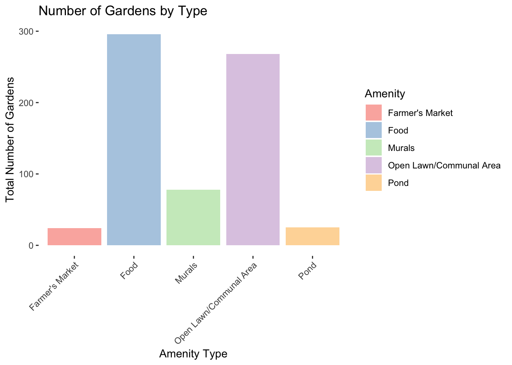
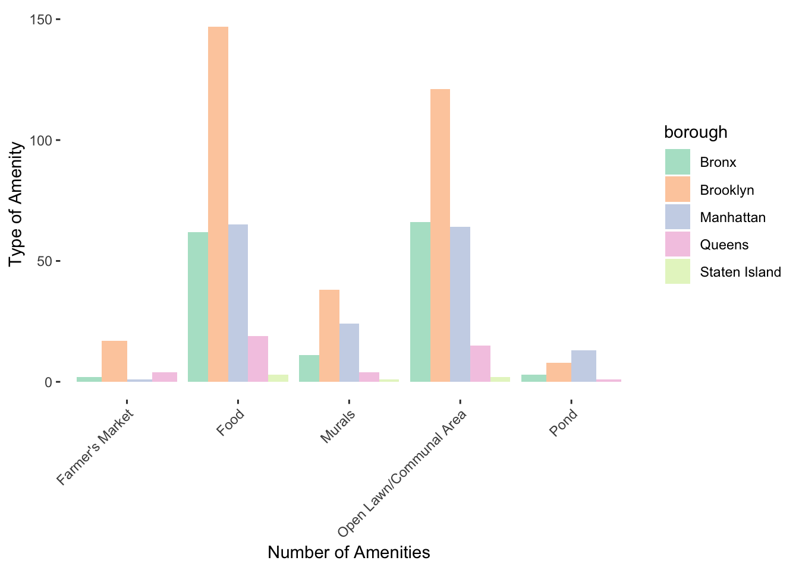
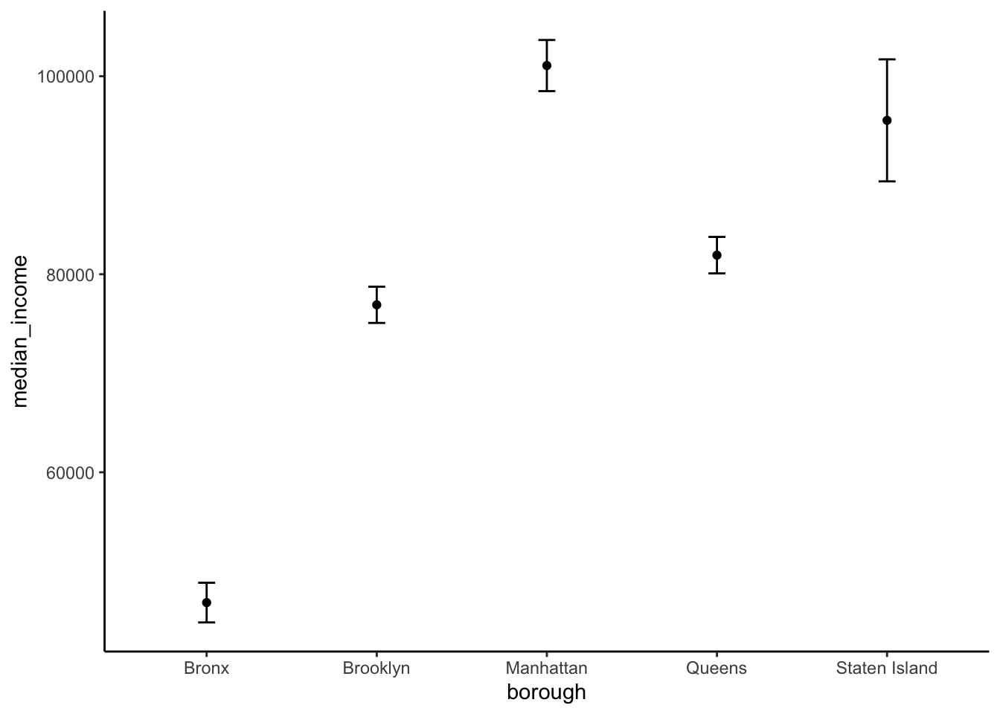

gardeninfo = read_csv("./GreenThumb_Garden_Info.csv") %>% janitor::clean_names()## Rows: 629 Columns: 27
## ── Column specification ────────────────────────────────────────────────────────
## Delimiter: ","
## chr (16): address, borough, gardenname, juris, multipolygon, openhrsf, openh...
## dbl (11): assemblydist, communityboard, congressionaldist, coundist, policep...
##
## ℹ Use `spec()` to retrieve the full column specification for this data.
## ℹ Specify the column types or set `show_col_types = FALSE` to quiet this message.gardenamenities = read_csv("./GreenThumb_Site_Visits.csv") %>% janitor::clean_names()## Rows: 357 Columns: 35
## ── Column specification ────────────────────────────────────────────────────────
## Delimiter: ","
## chr (1): ParksID
## dbl (5): InspectionID, TotalFenceLength, TotalSidewalkArea, TotalSidewalkLe...
## lgl (29): NextToAnotherGarden, OnSiteService, HydrantW_in15ft, HydrantOnGard...
##
## ℹ Use `spec()` to retrieve the full column specification for this data.
## ℹ Specify the column types or set `show_col_types = FALSE` to quiet this message.info_tidy = gardeninfo %>% select(borough, gardenname, parksid, zipcode, congressionaldist) %>%
mutate(borough = recode(borough,
"B" = "Brooklyn",
"X" = "Bronx",
"M" = "Manhattan",
"Q" = "Queens",
"R" = "Staten Island"))
amenities_tidy = gardenamenities %>% select(parks_id, open_lawn_or_communal_area, murals, farmers_market, pond, food, inspection_id) %>% rename(parksid = parks_id)
#merging data
garden_merged = full_join(amenities_tidy, info_tidy, by= "parksid") ## Warning in full_join(amenities_tidy, info_tidy, by = "parksid"): Detected an unexpected many-to-many relationship between `x` and `y`.
## ℹ Row 127 of `x` matches multiple rows in `y`.
## ℹ Row 169 of `y` matches multiple rows in `x`.
## ℹ If a many-to-many relationship is expected, set `relationship =
## "many-to-many"` to silence this warning.#removing duplicates
info_tidy %>% select(parksid) %>% duplicated()## [1] FALSE FALSE FALSE FALSE FALSE FALSE FALSE FALSE FALSE FALSE FALSE FALSE
## [13] FALSE FALSE FALSE FALSE FALSE FALSE FALSE FALSE FALSE FALSE FALSE FALSE
## [25] FALSE FALSE FALSE FALSE FALSE FALSE FALSE FALSE FALSE FALSE FALSE FALSE
## [37] FALSE FALSE FALSE FALSE FALSE FALSE FALSE FALSE FALSE FALSE FALSE FALSE
## [49] FALSE FALSE FALSE FALSE FALSE FALSE FALSE FALSE FALSE FALSE FALSE FALSE
## [61] FALSE FALSE FALSE FALSE FALSE FALSE FALSE FALSE FALSE FALSE FALSE FALSE
## [73] FALSE FALSE FALSE FALSE FALSE FALSE FALSE FALSE FALSE FALSE FALSE FALSE
## [85] FALSE FALSE FALSE FALSE FALSE FALSE FALSE FALSE FALSE FALSE FALSE FALSE
## [97] FALSE FALSE FALSE FALSE FALSE FALSE FALSE FALSE FALSE FALSE FALSE FALSE
## [109] FALSE FALSE FALSE FALSE FALSE FALSE FALSE FALSE FALSE FALSE FALSE FALSE
## [121] FALSE FALSE FALSE FALSE FALSE FALSE FALSE FALSE FALSE FALSE FALSE FALSE
## [133] FALSE FALSE FALSE FALSE FALSE FALSE FALSE FALSE FALSE FALSE FALSE FALSE
## [145] FALSE FALSE FALSE FALSE FALSE FALSE FALSE FALSE FALSE FALSE FALSE FALSE
## [157] FALSE FALSE FALSE FALSE FALSE FALSE FALSE FALSE FALSE FALSE FALSE FALSE
## [169] FALSE FALSE FALSE FALSE FALSE FALSE FALSE FALSE FALSE FALSE FALSE FALSE
## [181] FALSE FALSE FALSE FALSE FALSE FALSE FALSE FALSE FALSE FALSE FALSE FALSE
## [193] FALSE FALSE FALSE FALSE FALSE FALSE FALSE FALSE FALSE TRUE FALSE FALSE
## [205] FALSE FALSE FALSE FALSE FALSE FALSE FALSE FALSE FALSE FALSE FALSE FALSE
## [217] FALSE FALSE FALSE FALSE FALSE FALSE FALSE FALSE FALSE FALSE FALSE FALSE
## [229] FALSE FALSE FALSE FALSE FALSE FALSE FALSE FALSE FALSE FALSE FALSE FALSE
## [241] FALSE FALSE FALSE FALSE FALSE FALSE FALSE FALSE FALSE FALSE FALSE FALSE
## [253] FALSE FALSE FALSE FALSE FALSE FALSE FALSE FALSE FALSE FALSE FALSE FALSE
## [265] FALSE FALSE FALSE FALSE FALSE FALSE FALSE FALSE FALSE FALSE FALSE FALSE
## [277] FALSE FALSE FALSE FALSE FALSE FALSE FALSE FALSE FALSE FALSE FALSE FALSE
## [289] FALSE FALSE FALSE FALSE FALSE FALSE FALSE FALSE FALSE FALSE FALSE FALSE
## [301] FALSE FALSE FALSE FALSE FALSE FALSE TRUE FALSE FALSE FALSE FALSE FALSE
## [313] FALSE FALSE FALSE FALSE FALSE FALSE FALSE FALSE FALSE FALSE FALSE FALSE
## [325] FALSE FALSE FALSE FALSE FALSE FALSE FALSE FALSE FALSE FALSE FALSE FALSE
## [337] FALSE FALSE FALSE FALSE FALSE FALSE FALSE FALSE FALSE FALSE FALSE FALSE
## [349] FALSE FALSE FALSE FALSE FALSE FALSE FALSE FALSE FALSE FALSE FALSE FALSE
## [361] FALSE FALSE FALSE FALSE FALSE FALSE FALSE FALSE FALSE FALSE FALSE FALSE
## [373] FALSE FALSE FALSE FALSE FALSE FALSE FALSE FALSE FALSE FALSE FALSE FALSE
## [385] FALSE FALSE FALSE FALSE FALSE FALSE FALSE FALSE FALSE FALSE FALSE FALSE
## [397] FALSE FALSE FALSE FALSE FALSE FALSE FALSE FALSE FALSE FALSE FALSE FALSE
## [409] FALSE FALSE FALSE FALSE TRUE FALSE FALSE FALSE FALSE FALSE FALSE FALSE
## [421] FALSE FALSE FALSE FALSE FALSE FALSE FALSE FALSE FALSE FALSE FALSE FALSE
## [433] FALSE FALSE FALSE FALSE FALSE FALSE FALSE FALSE FALSE FALSE FALSE FALSE
## [445] FALSE FALSE FALSE FALSE FALSE FALSE FALSE FALSE FALSE FALSE FALSE FALSE
## [457] FALSE FALSE FALSE FALSE FALSE FALSE FALSE FALSE FALSE FALSE FALSE FALSE
## [469] FALSE FALSE FALSE FALSE FALSE FALSE FALSE FALSE FALSE FALSE FALSE FALSE
## [481] FALSE FALSE FALSE FALSE FALSE FALSE FALSE FALSE FALSE FALSE FALSE FALSE
## [493] FALSE FALSE FALSE FALSE FALSE FALSE FALSE FALSE FALSE FALSE FALSE FALSE
## [505] FALSE FALSE FALSE FALSE FALSE FALSE FALSE FALSE FALSE FALSE FALSE FALSE
## [517] FALSE FALSE FALSE FALSE FALSE FALSE FALSE FALSE FALSE FALSE FALSE FALSE
## [529] FALSE FALSE FALSE FALSE FALSE FALSE FALSE FALSE FALSE FALSE FALSE FALSE
## [541] FALSE FALSE FALSE FALSE FALSE FALSE FALSE FALSE FALSE FALSE FALSE FALSE
## [553] FALSE FALSE FALSE FALSE FALSE FALSE FALSE FALSE FALSE FALSE FALSE FALSE
## [565] FALSE FALSE FALSE FALSE FALSE FALSE FALSE FALSE FALSE FALSE FALSE FALSE
## [577] FALSE FALSE FALSE FALSE FALSE FALSE FALSE FALSE FALSE FALSE FALSE FALSE
## [589] FALSE FALSE FALSE FALSE FALSE FALSE FALSE FALSE FALSE FALSE FALSE FALSE
## [601] FALSE FALSE FALSE FALSE FALSE FALSE FALSE FALSE FALSE TRUE FALSE FALSE
## [613] FALSE FALSE FALSE FALSE FALSE FALSE FALSE FALSE FALSE FALSE FALSE FALSE
## [625] FALSE FALSE FALSE FALSE FALSEamenities_tidy %>% select(parksid) %>% unique()## # A tibble: 355 × 1
## parksid
## <chr>
## 1 B544-GT001
## 2 M397-GT001
## 3 M331-GT002
## 4 M297A-GT001
## 5 X277-GT001
## 6 B535-GT001
## 7 B575-GT001
## 8 B553-GT001
## 9 M313-GT001
## 10 M293-GT001
## # ℹ 345 more rowsgarden_merged[duplicated(garden_merged) | duplicated(garden_merged, fromLast = TRUE), ]## # A tibble: 8 × 11
## parksid open_lawn_or_communa…¹ murals farmers_market pond food inspection_id
## <chr> <lgl> <lgl> <lgl> <lgl> <lgl> <dbl>
## 1 M341-G… TRUE TRUE FALSE FALSE TRUE 220
## 2 M341-G… TRUE TRUE FALSE FALSE TRUE 220
## 3 B400-G… TRUE TRUE TRUE FALSE TRUE 266
## 4 B400-G… TRUE TRUE TRUE FALSE TRUE 266
## 5 Q045-G… TRUE FALSE FALSE FALSE TRUE 348
## 6 Q045-G… TRUE FALSE FALSE FALSE TRUE 348
## 7 BGT038 NA NA NA NA NA NA
## 8 BGT038 NA NA NA NA NA NA
## # ℹ abbreviated name: ¹open_lawn_or_communal_area
## # ℹ 4 more variables: borough <chr>, gardenname <chr>, zipcode <dbl>,
## # congressionaldist <dbl>garden_merged = garden_merged[!duplicated(garden_merged), ]
#creating amenity count table
amenity_count = garden_merged %>%
pivot_longer(cols = c(open_lawn_or_communal_area, murals, farmers_market, pond, food), names_to = "Amenity", values_to = "True_False") %>%
filter(True_False == TRUE) %>%
group_by(Amenity) %>%
count(name = "total_gardens")
#amenity count by borough
amenity_count_borough = garden_merged %>%
pivot_longer(cols = c(open_lawn_or_communal_area, murals, farmers_market, pond, food), names_to = "Amenity", values_to = "True_False") %>%
select(borough, Amenity, True_False) %>%
filter(True_False == TRUE) %>%
group_by(borough, Amenity) %>%
summarise(num_amenities = n(), .groups = "drop") %>%
group_by(borough) %>%
mutate(total_amenities = sum(num_amenities)) %>%
ungroup()
table1 = amenity_count_borough %>% select(borough, total_amenities) %>% unique() %>%
knitr::kable(col.names = c("Borough", "Total Amenities"),
label = "Total Number of Garden Amenities by Borough")DATA VIZ 1 histogram of the number of gardens with each of the features: open lawn/communal area, murals, pond, farmer’s market, food
plot1 = amenity_count %>%
mutate(Amenity = recode(Amenity,
"farmers_market" = "Farmer's Market",
"food" = "Food",
"murals" = "Murals",
"open_lawn_or_communal_area" = "Open Lawn/Communal Area",
"pond" = "Pond")) %>%
ggplot(aes(x = Amenity, y = total_gardens, fill = Amenity)) +
geom_col() +
labs(title = "Number of Gardens by Type",
x = "Amenity Type",
y = "Total Number of Gardens") +
scale_fill_brewer(palette = "Pastel1") +
theme(panel.background = element_rect(fill = "transparent")) +
theme(axis.text.x = element_text(angle = 45, hjust = 1))
plot1 DATA VIZ 2 Amenity Type by borough, facet histogram
plot2 = amenity_count_borough %>%
mutate(Amenity = recode(Amenity,
"farmers_market" = "Farmer's Market",
"food" = "Food",
"murals" = "Murals",
"open_lawn_or_communal_area" = "Open Lawn/Communal Area",
"pond" = "Pond")) %>%
ggplot(aes(x = Amenity, y = num_amenities, fill = borough)) +
geom_col(position = "dodge") +
labs(x = "Number of Amenities", y = "Type of Amenity") +
theme(axis.text.x = element_text(angle = 45, hjust = 1)) +
scale_fill_brewer(palette = "Pastel2") +
theme(panel.background = element_rect(fill = "transparent"))
plot2
DATA VIZ 3 Income Distribution Dot Plot
#importing and tidying income dataset
income = read_csv("./censusincome2024.csv") %>% janitor::clean_names()## Rows: 47 Columns: 37
## ── Column specification ────────────────────────────────────────────────────────
## Delimiter: ","
## chr (34): Label (Grouping), Bronx County, New York!!Number!!Estimate, Bronx ...
## num (3): Kings County, New York!!Median income (dollars)!!Estimate, Queens ...
##
## ℹ Use `spec()` to retrieve the full column specification for this data.
## ℹ Specify the column types or set `show_col_types = FALSE` to quiet this message.income_borough = income[2, ] %>%
select(bronx_county_new_york_median_income_dollars_estimate,
bronx_county_new_york_median_income_dollars_margin_of_error,
kings_county_new_york_median_income_dollars_estimate,
kings_county_new_york_median_income_dollars_margin_of_error,
new_york_county_new_york_median_income_dollars_estimate,
new_york_county_new_york_median_income_dollars_margin_of_error,
queens_county_new_york_median_income_dollars_estimate,
queens_county_new_york_median_income_dollars_margin_of_error,
richmond_county_new_york_median_income_dollars_estimate,
richmond_county_new_york_median_income_dollars_margin_of_error) %>%
mutate_all(as.character) %>%
pivot_longer(cols = everything(), names_to = "column_name", values_to = "value") %>%
mutate(
borough = str_extract(column_name, "^[a-z_]+(?=_county)"),
metric = ifelse(str_detect(column_name, "estimate"), "median_income", "margin_of_error")
) %>%
select(-column_name) %>%
pivot_wider(
names_from = metric,
values_from = value
) %>%
mutate(borough = recode(borough, bronx = 'Bronx', kings = 'Brooklyn', new_york = 'Manhattan', queens = 'Queens', richmond = 'Staten Island' ))
#converting to numeric
income_borough <- income_borough %>%
mutate(median_income = as.numeric(gsub(",", "", median_income))) %>%
mutate(margin_of_error = as.numeric(gsub("[±,]", "", margin_of_error)))
#add columns for MOE
income_borough = income_borough %>% mutate(
lower_margin = (median_income-margin_of_error),
upper_margin = (median_income+margin_of_error)
)
#income dsitribution dot plot with MoE
plot3 = income_borough %>%
ggplot(aes(x= borough, y = median_income)) +
geom_point() +
geom_errorbar(aes(ymax = upper_margin, ymin = lower_margin, width = 0.1)) +
theme_classic()
plot3
Poisson
#POISSON ANALYSIS
#isolating total amenities per borough
total_borough_amenity = select(amenity_count_borough, borough, total_amenities)
total_borough_amenity = total_borough_amenity[!duplicated(total_borough_amenity), ]
#creating new data frame for regression
poisson_df = left_join(income_borough, total_borough_amenity, by="borough") %>% select(borough, median_income, total_amenities)
# Fit the Poisson regression model
poisson_model <- glm(total_amenities ~ median_income,
family = poisson(link = "log"),
data = poisson_df)
table2 = summary(poisson_model)